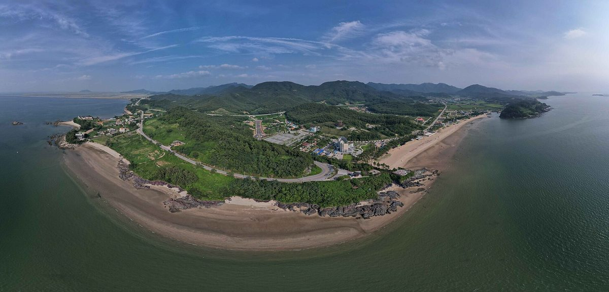

전남연구원 "진도에 해상풍력 3.6GW·태양광 1.4GW"…주민 지분 참여 '진도형 에너지 연금' 구상

'진도군 발전 구상' 보고서, 영농형 태양광 2035년 1GW·수상태양광 최대 400MW 제시…2031년부터 해상풍력 수익 복지·주거·교통에 재투자 구상
전남연구원이 전남 진도군 연안에 3.6GW 규모 해상풍력 집적화단지를 만들고 태양광을 1.4GW까지 늘리면서, 발전수익 일부를 주민 지분 참여와 신재생에너지공급인증서(REC) 수익을 바탕으로 한 '진도형 에너지 연금'으로 주민과 나누는 구상을 제시했다. 연구원의 '진도군 발전 구상' 보고서는 해상풍력을 2031년 이후 가사도·외병도·조도 일원 1단계 1.47GW, 2034년 이후 조도 외해 2단계 2.13GW로 나눠 조성하는 방안을 담았다. 태양광은 군내면·지산면 등을 중심으로 영농형을 2028년 100MW, 2030년 500MW, 2035년 1GW로 늘리고 보전호·봉암저수지 등에 최대 400MW 규모 수상태양광을 두는 안이며, 진도항 배후에는 345kV급 변전소를 새로 짓는 방안을 내놨다. 보고서는 에너지 연금과 함께 2031년부터 해상풍력 수익을 복지·주거·교통 등 지역에 다시 투자하고, 군내일반산단을 해상풍력 기자재·전기·기계장비 생산기지로 바꾸며 군내면에 15만 평 규모 제2농공단지를 조성하는 구상도 담았다. 청정에너지 생산·공급과 해상풍력 산업생태계 등 8개 핵심과제로 짜인 이 보고서는 연구원의 정책 제안으로, 진도군이 확정한 계획이나 예산은 아니다. 보고서 소개 내용에는 에너지 연금의 지급 대상이나 금액, 주민 지분 비율이 담기지 않았다.
시민에너지 관점
해상풍력 3.6GW와 태양광 1.4GW라는 큰 그림에 주민 지분 참여와 에너지 연금이 처음부터 들어갔다는 점은 신안에서 시작된 이익공유가 전남의 다른 군으로 번지고 있음을 보여 준다. 다만 대규모 해상풍력은 외부 자본의 몫이 커서 주민 몫이 이름뿐인 연금에 그칠 수 있다는 걱정이 나올 수 있다. 덴마크가 2009년부터 2020년까지 새 풍력 사업 지분의 20%를 지역 주민에게 내놓도록 했던 것처럼, 주민 지분의 비율과 참여 방식을 구상 단계에서부터 숫자로 못 박아야 연금이 실제 소득이 된다. 진도군과 전라남도는 이 구상을 실행 계획으로 옮길 때 영농형·저수지 수상태양광처럼 마을 단위로 시작할 수 있는 사업부터 주민과 마을이 직접 소유하도록 설계해야 한다.
출처: 남도일보 2026-10-25 조태훈 기자 원문 보기
全南研究院「珍島に洋上風力3.6GW・太陽光1.4GW」…住民の持ち分参加で「珍島型エネルギー年金」構想
「珍島郡発展構想」報告書、営農型太陽光を2035年に1GW・水上太陽光は最大400MWと提示…2031年から洋上風力の収益を福祉・住居・交通に再投資する構想
韓国・全羅南道のシンクタンク、全南研究院は、全羅南道珍島（チンド）郡の沿岸に3.6GW規模の洋上風力集積化団地をつくり、太陽光を1.4GWまで増やしたうえで、発電収益の一部を、住民の持ち分参加と再生可能エネルギー供給認証書（REC）の収益をもとにした「珍島型エネルギー年金」として住民と分け合う構想を示した。研究院の「珍島郡発展構想」報告書は、洋上風力を2031年以降にカサド・ウェビョンド・チョドの島々一帯で第1段階1.47GW、2034年以降にチョド沖で第2段階2.13GWと分けて整備する案を盛り込んだ。太陽光は郡内面・智山面などを中心に営農型を2028年に100MW、2030年に500MW、2035年に1GWへと増やし、ポジョン湖・ポンアム貯水池などに最大400MW規模の水上太陽光を設ける案で、珍島港の背後には345kV級の変電所を新設する案を示した。報告書はエネルギー年金とともに、2031年から洋上風力の収益を福祉・住居・交通など地域に再投資し、郡内一般産業団地を洋上風力の資機材・電気・機械設備の生産拠点に転換し、郡内面に15万坪規模の第2農工団地を造成する構想も盛り込んだ。クリーンエネルギーの生産・供給や洋上風力の産業エコシステムなど8つの中核課題で構成されたこの報告書は研究院の政策提案であり、珍島郡が確定した計画や予算ではない。報告書の紹介内容には、エネルギー年金の支給対象や金額、住民の持ち分比率は含まれていない。
市民エネルギーの視点
洋上風力3.6GWと太陽光1.4GWという大きな構想に、住民の持ち分参加とエネルギー年金が最初から組み込まれたことは、新安郡で始まった利益共有が全羅南道の他の郡に広がっていることを示している。ただ、大規模な洋上風力は外部資本の取り分が大きく、住民の取り分が名ばかりの年金にとどまるのではないかとの懸念も出うる。デンマークが2009年から2020年まで新設風力事業の持ち分の20%を地元住民に提供するよう義務づけたように、住民持ち分の比率と参加方式を構想段階から数字で定めてこそ、年金は実際の所得になる。珍島郡と全羅南道はこの構想を実行計画に移す際、営農型や貯水池の水上太陽光のように集落単位で始められる事業から、住民と集落が直接所有できるよう設計すべきだ。
出典: 南道日報 2026-10-25 趙テフン記者 原文を読む
全南研究院提出"珍岛海上风电3.6GW、光伏1.4GW"…构想以居民持股打造"珍岛型能源年金"
《珍岛郡发展构想》报告提出农光互补光伏2035年达1GW、水上光伏最多400MW…构想自2031年起将海上风电收益再投资于福利、住房和交通
韩国全罗南道智库全南研究院提出构想：在全罗南道珍岛郡沿海建设3.6GW规模的海上风电集群，并把光伏扩大到1.4GW，同时以居民持股和可再生能源证书（REC）收益为基础设立"珍岛型能源年金"，与居民分享部分发电收益。研究院的《珍岛郡发展构想》报告提出分两期建设海上风电：2031年以后在Gasado、Oebyeongdo、Jodo等岛屿一带建设第一期1.47GW，2034年以后在Jodo外海建设第二期2.13GW。光伏方面，以郡内面、智山面等为中心，把农光互补光伏从2028年的100MW增至2030年的500MW、2035年的1GW，并在Bojeon湖、Bongam水库等处设置最多400MW的水上光伏；报告还提出在珍岛港后方新建345kV级变电站。除能源年金外，报告还构想自2031年起将海上风电收益再投资于福利、住房、交通等地方领域，把郡内一般产业园区转型为海上风电设备、电气和机械装备生产基地，并在郡内面建设15万坪规模的第二农工园区。这份由清洁能源生产供应、海上风电产业生态等8项核心课题构成的报告是研究院的政策建议，并非珍岛郡已确定的计划或预算。报告的介绍内容中没有包括能源年金的发放对象、金额以及居民持股比例。
市民能源视角
在海上风电3.6GW、光伏1.4GW的宏大蓝图中，从一开始就纳入居民持股和能源年金，说明始于新安郡的收益共享正向全罗南道其他郡扩散。但大型海上风电中外部资本份额大，有人可能担心居民的份额只会是有名无实的年金。正如丹麦在2009年至2020年间要求新建风电项目须向当地居民提供20%的股份，只有从构想阶段就用数字明确居民持股比例和参与方式，年金才能成为实际收入。珍岛郡和全罗南道把这一构想转为实施计划时，应从农光互补、水库水上光伏这类可以以村为单位起步的项目开始，设计成由居民和村庄直接拥有的结构。
来源: 南道日报 2026-10-25 Cho Tae-hoon 查看原文
Jeonnam Research Institute envisions 3.6GW offshore wind and 1.4GW solar for Jindo, with a resident-shareholding "Jindo energy pension"
"Jindo County Development Plan" report proposes 1GW of agrivoltaics by 2035 and up to 400MW of floating solar, and envisions reinvesting offshore wind revenue in welfare, housing and transport from 2031
The Jeonnam Research Institute, a South Jeolla provincial think tank, has proposed building a 3.6GW offshore wind cluster off the coast of Jindo County and expanding solar power to 1.4GW, while sharing part of the generation revenue with residents through a "Jindo energy pension" based on resident shareholding and income from renewable energy certificates (RECs). The institute's "Jindo County Development Plan" report sets out offshore wind in two phases: 1.47GW around Gasado, Oebyeongdo and Jodo islands after 2031, and 2.13GW in the waters beyond Jodo after 2034. For solar, it proposes growing agrivoltaics, centred on Gunnae and Jisan townships, from 100MW in 2028 to 500MW in 2030 and 1GW in 2035, installing up to 400MW of floating solar on Bojeon Lake, Bongam Reservoir and other sites, and building a new 345kV substation behind Jindo Port. Alongside the energy pension, the report envisions reinvesting offshore wind revenue in local welfare, housing and transport from 2031, converting the Gunnae general industrial complex into a production base for offshore wind components and electrical and mechanical equipment, and creating a second agro-industrial complex of 150,000 pyeong in Gunnae township. Built around eight core tasks including clean energy production and supply and an offshore wind industry ecosystem, the report is a policy proposal by the institute, not a plan or budget adopted by Jindo County. The published summary of the report does not specify who would receive the energy pension, how much it would pay, or what share residents would hold.
Citizen Energy View
That resident shareholding and an energy pension are written into a 3.6GW offshore wind and 1.4GW solar vision from the outset shows that the benefit sharing that began in Shinan County is spreading to other counties in South Jeolla. Yet outside capital tends to dominate large offshore wind projects, and some may fear that residents' share will end up as a pension in name only. Just as Denmark required new wind projects to offer 20% of their ownership to local residents from 2009 to 2020, the pension will become real income only if the size of residents' stake and how they take part are fixed in numbers from the planning stage. When Jindo County and South Jeolla Province turn this vision into an action plan, they should design it so that residents and villages directly own projects that can start at village scale, such as agrivoltaics and floating solar on reservoirs.
Source: Namdo Ilbo 2026-10-25 Cho Tae-hoon Read the original